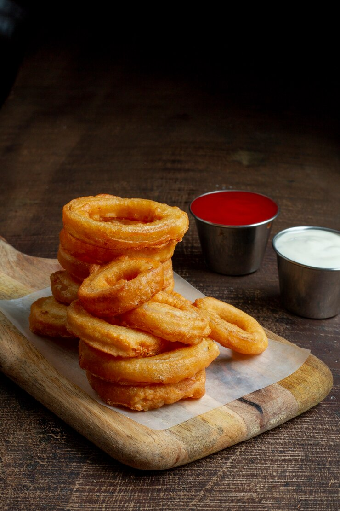

Onion Rings
Recipe credit: JeanieMomof3
Image credit: freepik

Description
This onion rings recipe is from a former employee of a popular drive-in restaurant.
Enjoy 3 servings of onion rings that are sweet and tender on the inside, and crispy
and crunchy on the outside!
Ingredients
- 1 large Vidalia or other sweet onion
- 1 quart oil for frying, or as needed
- 1 1/4 cups all-purpose flour
- 1 teaspoon baking powder
- 1 teaspoon salt
- 1 cup milk, or as needed
- 1 large egg
- 3/4 cup dry bread crumbs
- 1/8 teapsoon seasoned salt, or to taste
Steps
- Slice onion into 1/4-inch-thick rings. Heat oil in a deep fryer to 185 degrees C.
Place a wire rack over a sheet of aluminium foil.
- Prepare breading station by setting out 3 wide, shallow dishes. Whisk flour, baking
powder, and salt together in the first dish. Whisk milk and egg together in the second
dish. Place bread crumbs in the third dish.
- Dip each onion ring into the flour mixture, turning several times until fully coated
with flour.
- Transfer to the egg mixture and use a fork to turn until coated. Lift onion with the
fork and shake gently so excess liquid drips back into the dish.
- Place onion in the bread crumbs and turn several times to coat, scooping crumbs
over the ring if necessary.
- Lift again with the fork, tap any excess bread crumbs back into the dish, and
place on the wire rack while you prepare the remaining onion rings.
- Deep-fry 3 to 4 onion rings at a time in the preheated oil for 2 to 3 minutes,
until golden-brown. Drain on paper towels while you deep-fry the remaining rings.
- Sprinkle with seasoning salt before serving.
Back to homepage